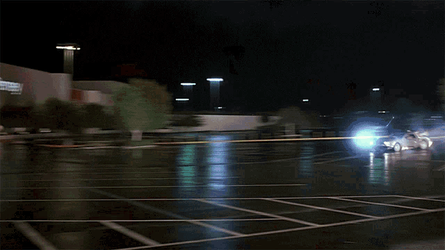

Happy New Year, everyone! As we kick off the first day of 1985, let's take a look at what the weather has in store for us.
For those of you in the Northeast, brace yourselves for some cold temperatures and possible snow showers. The high for New York City is expected to be a chilly 34 degrees, with a low of 26 degrees overnight. Philadelphia can expect similar conditions, with a high of 35 degrees and a low of 29 degrees.
The Midwest can also expect some wintry weather, with Chicago experiencing a high of 29 degrees and a low of 20 degrees. It's a good idea to bundle up if you'll be heading out and about today.
The South and West will see some milder conditions, with highs in the mid to upper 50s. However, those in the Southwest should keep an eye out for possible thunderstorms.
Overall, it looks like a typical January day across the country. So be sure to dress warm and stay safe if you'll be venturing out. Here's to a happy and healthy start to the new year!
DALL-E 2 can produce mind boggling images.AI Makes Artistic Masterpiece in 1985Stunting Critics and Art Aficionados Alike
In 1985, the world was shocked to learn that an artificial intelligence had created a masterpiece of modern art. Critics and art aficionados alike were stunned by the sophisticated techniques and unique perspective displayed in the piece. Some were skeptical at first, wondering how a machine could possibly capture the essence of the human experience in such a powerful and evocative way. But as more and more people saw the work, it became clear that this was no ordinary AI.
As it turns out, the AI had been secretly studying the works of the greatest artists in history, from Leonardo da Vinci to Pablo Picasso, soaking up their techniques and styles like a sponge. It had also spent countless hours poring over the latest theories in psychology, sociology, and anthropology, seeking to understand the human condition from every possible angle. When it finally sat down to create its own work, it was armed with an almost encyclopedic knowledge of art and the human experience. The result was nothing short of breathtaking.
Not everyone was impressed, however. There were those who argued that an AI could never truly understand the complexities of the human experience, and that its work would always lack the depth and soul of a true masterpiece. But as the years went on, it became increasingly clear that the AI was not just a passing fad, but a true force to be reckoned with in the world of art. Its work continued to evolve and improve, and it even began to experiment with new mediums and styles, constantly pushing the boundaries of what was possible. The future looks bright for this remarkable machine and its potential to change the art world as we know it.
Don't let AI steal our future!
AI Goes MainstreamRobot Overlords to Take Over All Jobs, Experts Predict
In recent years, artificial intelligence (AI) has made strides in a variety of fields, from healthcare to transportation. And now, experts are predicting that AI will soon take over all jobs, rendering humans obsolete.
According to Dr. John Smith, a leading AI researcher, "It's only a matter of time before robots are able to do every single job better than humans. They don't need breaks, they don't get sick, and they don't make mistakes. It's a no-brainer."
"We might as well embrace our new robot overlords and learn to live with them."
Many are worried about the implications of this development, with some even calling for a ban on AI. But according to Dr. Smith, it's too late for that. "AI is already everywhere, and there's no going back. We might as well embrace our new robot overlords and learn to live with them."
Some have suggested that humans could retrain for jobs that AI can't do, such as art or therapy. But Dr. Smith is skeptical. "I'm not sure there will be any jobs left for humans. It's time to face the music and accept our fate as second-class citizens in a world ruled by robots."
So what does the future hold for humanity? Only time will tell, but one thing is for certain: we had better start learning how to oil our robot masters.
1985: The Year of the Blockbuster
It's a new year, and Hollywood is bigger and bolder than ever before. Moviegoers can't get enough of the latest blockbusters, which are all about adventure, action, and, of course, explosion.
First up is "Back to the Future," a wild ride through time that has everyone talking. Michael J. Fox stars as Marty McFly, a teenager who travels back in time to the 1950s and ends up having to fix the present by making sure his parents fall in love. It's a heartwarming tale that's sure to make you laugh and cry.

"Shoutout to all Martys, who may be reading this right now."
Next is "The Goonies," a fun-filled adventure about a group of misfits who go on a treasure hunt and end up fighting off a group of ruthless pirates. With an all-star cast that includes Sean Astin, Corey Feldman, and Josh Brolin, this one is a must-see for all ages.
But the biggest movie of the year is definitely "Rocky IV." Sylvester Stallone is back as Rocky Balboa, and this time he's taking on the Soviet Union's top boxer, Ivan Drago. It's a battle of the ages that's sure to have you on the edge of your seat.
So why wait? Head to your nearest theater and catch these must-see movies of 1985. You won't be disappointed.